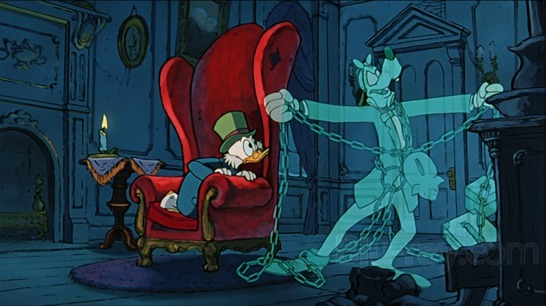
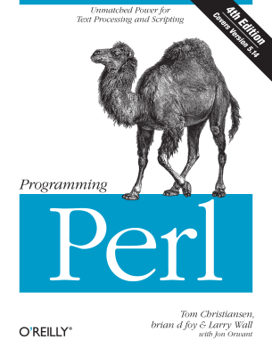
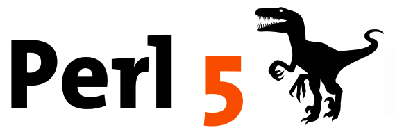

Perl
Brian
bduggan.github.io/perl-xmas-2015- Perl's Ghost
- Ghost of Perl Past
- Ghost of Perl Present
- Ghost of Perl Yet to Come
- Dec 25, 2015
1. Perl's Ghost
* backwards-compatibilty chains
$ man perlhist
...
THE KEEPERS OF THE PUMPKIN
Larry 1.000 1987-Dec-18
Larry 2.000 1988-Jun-05
Larry 3.000 1989-Oct-18
Larry 4.000 1991-Mar-21
Larry 5.000 1994-Oct-17
Sarathy 5.005 1998-Jul-22
Sarathy 5.6.0 2000-Mar-22
Jarkko 5.8.0 2002-Jul-18
Hugo 5.9.0 2003-Oct-27
Rafael 5.10.0 2007-Dec-18
Jesse 5.11.0 2009-Oct-02
Jesse 5.12.0 2010-Apr-12
Leon 5.13.0 2010-Apr-20
Jesse 5.14.0 2011-May-14
David G 5.15.0 2011-Jun-20
Ricardo 5.16.0 2012-May-20
Zefram 5.17.0 2012-May-26
Ricardo 5.18.0 2013-May-18
Ricardo 5.19.0 2013-May-20
Ricardo 5.20.0 2014-May-27
Ricardo 5.21.0 2014-May-27
Ricardo 5.22.0 2015-Jun-01
Ricardo 5.23.0 2015-Jun-20
2. Perl Past
"Programming Perl 4th Ed cover" by Source (WP:NFCC#4).
1991, 1996, 2000, 2012
3. Perl Present
Comprehensive Perl Archive Network
- cpan.org
- metacpan.org
- CPAN
- CPANPLUS
- cpanminus (cpanm)
- perlbrew
$ brew install cpanm
$ cpanm install Text::SpellChecker
#!/usr/bin/env perl
use v5.14;
my %santa;
$santa{claus} = 1;
if ( exists $santa{claus} ) {
say "ho ho"
}
say 'ho ho' if exists $santa{claus};
say 'ho ho' unless not exists $santa{claus};
say 'ho ho' unless ! exists $santa{claus};
exists $santa{claus} and say "ho ho";
not exists $santa{claus} or say "ho ho";
#!/usr/bin/env perl
use v5.14;
# OO
package Santa {
sub exists {
1;
}
}
say 'ho ho' if Santa->exists;
# Functional
sub santa {
shift->()
}
sub exists {
1;
}
say 'ho ho' if santa(\&exists);
Perl5 Resources
- man pages
man perlintro
man perl - perlmonks.org
- YAPC (YAPC::NA, YAPC::EU, YAPC::Asia...)
- PGHPW, DCBPW
- Philly Perl mongers
phl.pm.org - Web frameworks
mojolicio.us
perldancer.org
PSGI/Plack - Perlweekly
http://perlweekly.com
4. Perl Yet to Come

Perl6
Perl 5 was my rewrite of Perl. I want Perl 6 to be the community's rewrite of Perl and of the community.--Larry Wall, State of the Onion speech, TPC4 (OSCon 2000)
- In development since 2000
- 1.0 Planned for XMAS 2015
- http://perl6.org
- http://perl6advent.wordpress.com
Perl6
say "Mlčoch".substr(2,1).uninameLATIN SMALL LETTER C WITH CARON# Define unicode ÷ to be divided by sub infix:<÷> (Int $n, Int $m) { fail "can't divide by 0" if $m == 0; return $n / $m; } say 10 ÷ 55sub present { say 'robot' } my $paper = &present.wrap(sub { ... } ) presentStub code executed&present.unwrap($paper) presentrobot
Perl6
- Grammars (slangs)
- multi dispatch
- gradual typing
- addition, subtraction, division
ruby -e 'puts 7/2'
python -c 'print 7/2'
perl -e 'print 7/2'
perl6 -e 'print 7/2'
ruby -e 'puts -7/2'
python -c 'print -7/2'
perl -e 'print -7/2'
perl6 -e 'print -7/2'
ruby -e 'puts .1 + .2 - .3'
python -c 'print .1 + .2 - .3'
perl -e 'print .1 + .2 - .3'
perl6 -e 'print .1 + .2 - .3'
Perl6 for Mere Mortals, Ovid